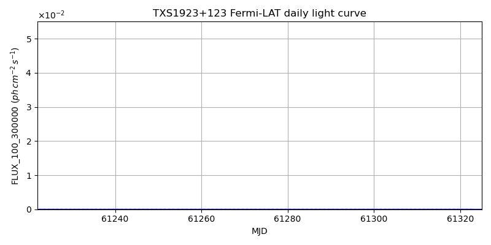
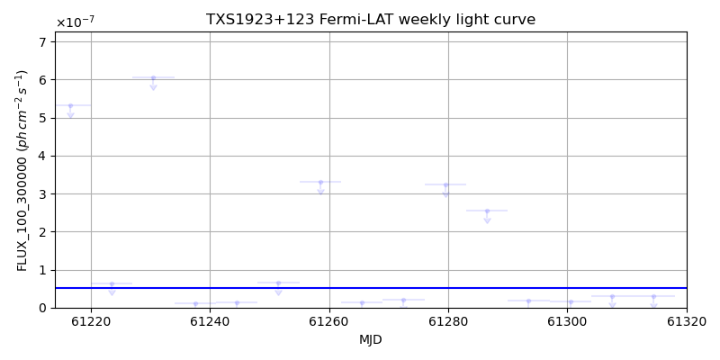
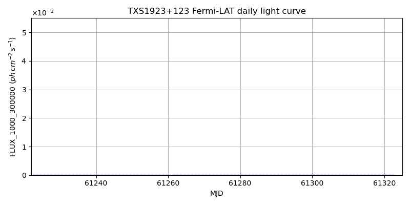
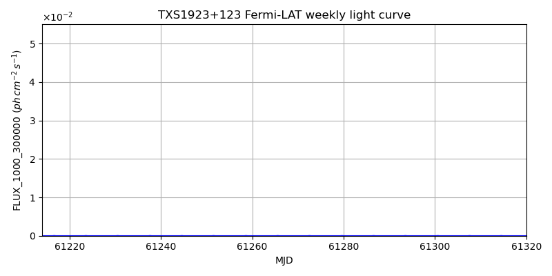

LAT Lightcurve site: https://fermi.gsfc.nasa.gov/ssc/data/access/lat/msl_lc/source/TXS_1923p123
NED: Query
Time of last update of this page: UT: 2026-10-10 15:26 (MJD: 61323.644)
| Property | Value |
|---|---|
| R.A. | 19:25:40.80 |
| Dec. | 12:27:39.6 |
| z | 0.000 |
| 3FGL SpectrumType | PowerLaw |
| 3FGL PL Index | 2.61 |
| 3FGL Flux_100_300000 | 5.09e-08 1 / (s cm2) |
| 3FGL Flux_1000_300000 | 1.26e-09 1 / (s cm2) |
| 3FGL Flux >200 GeV | 2.54e-13 1 / (s cm2) |
| 3FGL Extrap. Crab >200 GeV | 0.00 |
| 3FGL Flux After EBL Absorption >200GeV | 2.54e-13 1 / (s cm2) |
| 3FGL EBL Crab Fraction >200GeV | 0.00 |

| MJD | dMJD | Flux | dFlux | Frac3FGL | FracCrab>200GeV | EBLFracCrab>200GeV |
|---|---|---|---|---|---|---|
| 61318.50 | 0.50 | 5.50e-07 | 0.00e+00 | 0.00 | 0.00 | 0.00 |
| 61319.50 | 0.50 | 2.21e-06 | 0.00e+00 | 0.00 | 0.00 | 0.00 |
| 61320.50 | 0.50 | 9.58e-07 | 0.00e+00 | 0.00 | 0.00 | 0.00 |
| 61321.50 | 0.50 | 2.21e-07 | 0.00e+00 | 0.00 | 0.00 | 0.00 |
| 61322.50 | 0.50 | 4.98e-08 | 0.00e+00 | 0.00 | 0.00 | 0.00 |

| MJD | dMJD | Flux | dFlux | Frac3FGL | FracCrab>200GeV | EBLFracCrab>200GeV |
|---|---|---|---|---|---|---|
| 61286.50 | 3.50 | 2.55e-07 | 0.00e+00 | 0.00 | 0.00 | 0.00 |
| 61293.50 | 3.50 | 1.71e-08 | 0.00e+00 | 0.00 | 0.00 | 0.00 |
| 61300.50 | 3.50 | 1.61e-08 | 0.00e+00 | 0.00 | 0.00 | 0.00 |
| 61307.50 | 3.50 | 3.07e-08 | 0.00e+00 | 0.00 | 0.00 | 0.00 |
| 61314.50 | 3.50 | 2.93e-08 | 0.00e+00 | 0.00 | 0.00 | 0.00 |

| MJD | dMJD | Flux | dFlux | Frac3FGL | FracCrab>200GeV | EBLFracCrab>200GeV |
|---|---|---|---|---|---|---|
| 61318.50 | 0.50 | 8.81e-08 | 0.00e+00 | 0.00 | 0.00 | 0.00 |
| 61319.50 | 0.50 | 3.20e-08 | 0.00e+00 | 0.00 | 0.00 | 0.00 |
| 61320.50 | 0.50 | 8.71e-08 | 0.00e+00 | 0.00 | 0.00 | 0.00 |
| 61321.50 | 0.50 | 3.98e-08 | 0.00e+00 | 0.00 | 0.00 | 0.00 |
| 61322.50 | 0.50 | 1.76e-08 | 0.00e+00 | 0.00 | 0.00 | 0.00 |

| MJD | dMJD | Flux | dFlux | Frac3FGL | FracCrab>200GeV | EBLFracCrab>200GeV |
|---|---|---|---|---|---|---|
| 61286.50 | 3.50 | 9.21e-09 | 0.00e+00 | 0.00 | 0.00 | 0.00 |
| 61293.50 | 3.50 | 5.30e-09 | 0.00e+00 | 0.00 | 0.00 | 0.00 |
| 61300.50 | 3.50 | 5.33e-09 | 0.00e+00 | 0.00 | 0.00 | 0.00 |
| 61307.50 | 3.50 | 4.39e-09 | 0.00e+00 | 0.00 | 0.00 | 0.00 |
| 61314.50 | 3.50 | 1.00e-08 | 0.00e+00 | 0.00 | 0.00 | 0.00 |
--------------------------------------------------------- Using user-supplied coords: 19:25:40.80 12:27:39.6 2000 --------------------------------------------------------- FLWO UT night of: 2026-10-11 Local Sid. @ Midnight: 00:55 Sunset (-15.0) (local, UT): 19:04 02:04 Sunrise (-15.0) (local, UT): 05:18 12:18 Moonrise (local, UT): Moonset (local, UT): Moon phase: 0.01 --------------------------------------------------------- AzTime LSID UT Obj_el Obj_az Mn_el Mn_az Sep. --------------------------------------------------------- 19:04 19:58 02:04 69.5 202.8 -16.1 264.2 95.6 19:34 20:29 02:34 66.1 220.2 -22.3 267.8 95.4 20:04 20:59 03:04 61.4 233.1 -28.5 271.5 95.1 20:34 21:29 03:34 56.0 242.6 -34.7 275.4 94.9 21:04 21:59 04:04 50.2 250.0 -40.8 279.7 94.6 21:34 22:29 04:34 44.0 256.0 -46.8 284.6 94.3 22:04 22:59 05:04 37.8 261.0 -52.7 290.5 94.0 22:34 23:29 05:34 31.4 265.5 -58.4 297.7 93.7 23:04 23:59 06:04 25.0 269.6 -63.6 307.3 93.4 23:34 00:29 06:34 18.7 273.5 -68.1 320.3 93.1 00:04 00:59 07:04 12.3 277.3 -71.3 338.2 92.8 00:34 01:29 07:34 6.1 281.1 -72.6 0.4 92.5 01:04 01:59 08:04 0.2 285.0 -71.5 22.7 92.2 01:34 02:30 08:34 -6.3 289.0 -68.3 40.8 91.9 02:04 03:00 09:04 -12.4 293.4 -63.9 54.1 91.5 02:34 03:30 09:34 -18.2 298.1 -58.7 63.8 91.2 03:04 04:00 10:04 -23.7 303.3 -53.1 71.2 91.0 03:34 04:30 10:34 -28.8 309.1 -47.3 77.2 90.7 04:04 05:00 11:04 -33.6 315.7 -41.4 82.2 90.4 04:34 05:30 11:34 -37.7 323.1 -35.3 86.6 90.1 05:04 06:00 12:04 -41.2 331.5 -29.2 90.6 89.9 05:18 06:14 12:18 -42.5 335.6 -26.5 92.4 89.8 --------------------------------------------------------- Dark hours >55 deg.: 1.59 srcstart (UT): 2026-10-11 02:04 srcend (UT): 2026-10-11 03:39